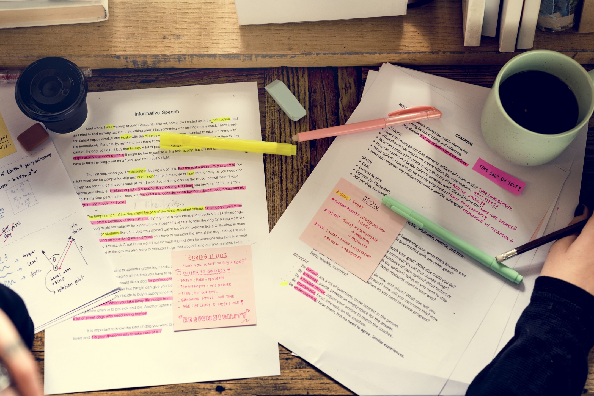
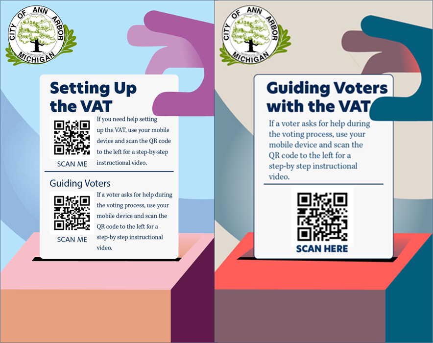
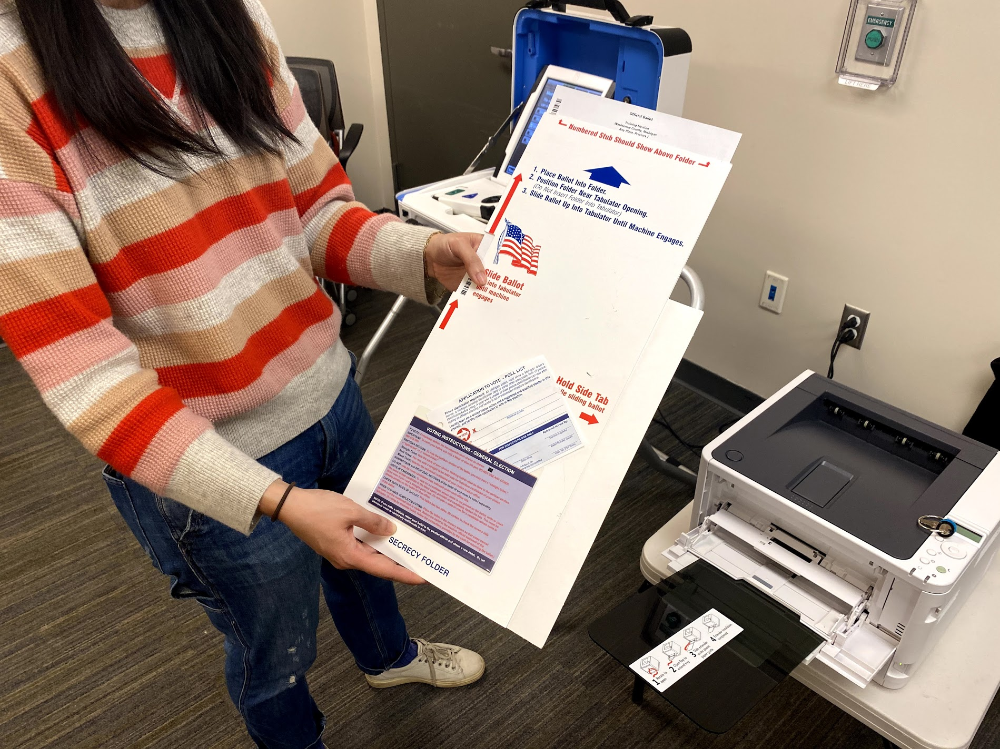

Ann Arbor City Clerk's Office
Ann Arbor City Clerk's Office
Project Details

Timeline
Four months with three UMSI grad students.

Product Goals
The Ann Arbor City Clerk utilizes a voter assist terminal (VAT) to help voters with disabilities at the polls.

Project Goals
Improve in-person voting accessibility for blind Ann Arbor residents.

Systems Used
Otter.ai, Adobe Illustrator, iMovie
Process |
|||
I. Needs Assessment |
II. Usability Evaluation |
||
Interviews |
Prototyping |
User Testing |
|
We interviewed subject matter experts, blind voters, and poll workers to guage levels of accesssibility. |
We then prototyped a quickly deployable VAT guide that followed our interview findings |
We performed two user tests to determine product viability from voter and poll worker perspectives. |
|
Interviews & Mapping
Process
- Interviewed 5 poll workers and 3 subject matter experts
- Utilized qualitative coding to parse findings
- Determined the direction of our target user
Findings
We found that most of the problems
rested with ill-equipped or under-trained poll workers who have inconsistent instructions on how to
to set up the VAT. In the high-stakes environment of election day, stress only builds.
Lessons Learned
This interview process in particular required intensive study of our interview
transcripts to determine the best user group. We could have focused on blind voters themselves, but the product
may have been too complex or unused by the township.

Prototyping
Process
- Created process scripts for voters and poll workers using the VAT
- Generated a QR-accessible poster for VAT instructions with YouTube video
Findings
Our prototypes emphasized a faster option than
reading the instruction manual for poll workers, while also offering visual cues that they are setting up
the VAT correctly. The voting video helps orient voters who have not used the VAT before.
Lessons Learned
This process taught me how to effectively communicate findings into visualizations.

User Testing
Process
- User tested with a poll worker and blind voter
- Iterated on changes and presented to the client
Findings
The main insight for the VAT set-up video was that we needed to make it more explicit that the user can pause the video, and to signal key steps with noises and pauses. The main insight for the VAT voting video was to include that choosing the touch screen only option turns off the screen reader for the VAT.
Lessons Learned
I learned the viability of non-technical solutions to complex problems. Our additonal recommendations, like a VAT ambassador program or written instructions for how to vote on the Hart VAT were given as recommendations with the knowledge that the clerk's office has little capacity beyond its current state.
